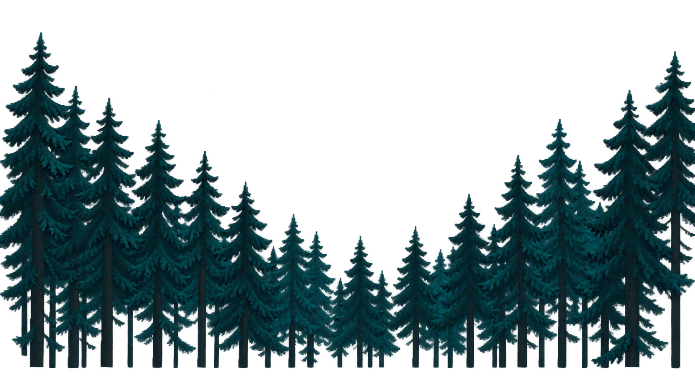
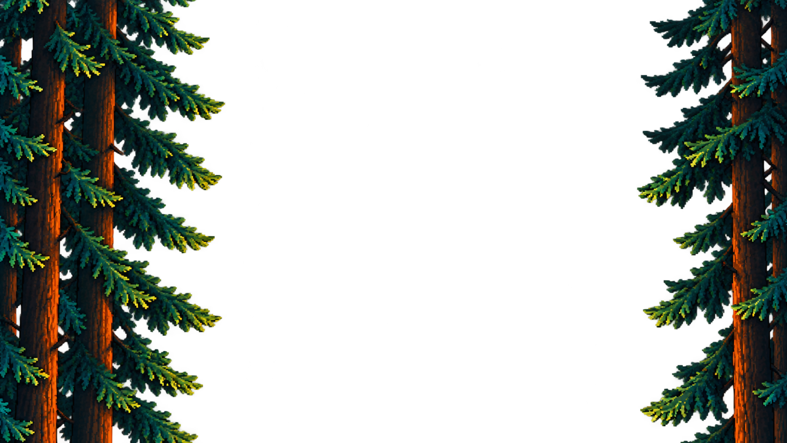
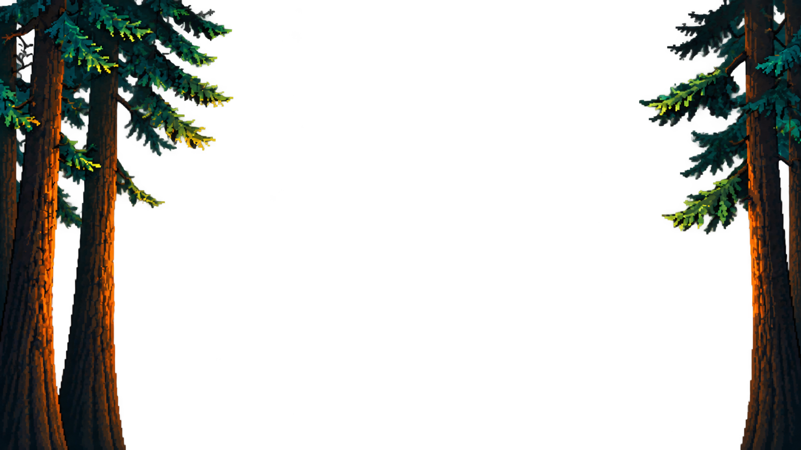
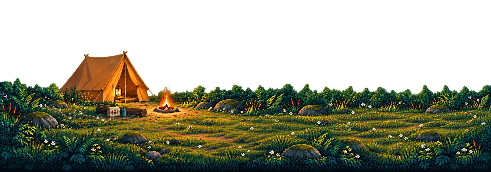
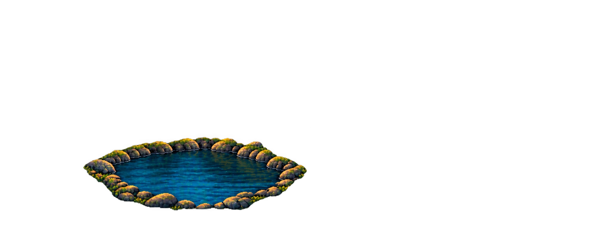
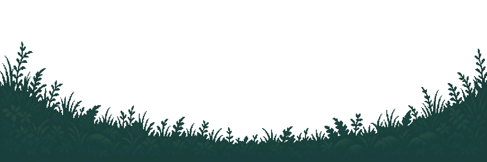

A few honest answers.
Check in about your sleep, mood, stress, movement, and everyday habits. Just you, as you are.
Take a breath. Reflect on your week.
It only takes 5 minutes to find a Mimu that feels just like you.











Some weeks are a lot. Some are a little lighter. Mimu is a reflection of your week, never a definition of you.
Check in about your sleep, mood, stress, movement, and everyday habits. Just you, as you are.
Mimu takes a humanlike slime form, with an expression and a posture that reflect your week.
Understand what your slime is reflecting, with gentle words and a few small ideas to take with you.
A little sunny, a little sleepy, or a bit of everything, your Mimu can change with every check-in. There are 16 forms to meet. Here are four of them.

Well-rested and ready to wander. A little sunshine, with room to breathe.

Heavy eyelids and a light heart. Happily drifting into the slow lane.

A crowded mind and a battery blinking low. It’s been a heavy week on sleepy shoulders.

Rested and carrying a few clouds. There’s still a spark in you, even when the week feels heavy.
16 forms. Plenty of room for a mixed week.
There’s no best slime to be.
You don’t have to have it all figured out. Mimu will be right here.